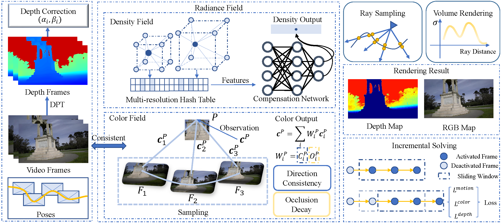

|
I-DACS: Always Maintaining Consistency between Poses and the Field for Radiance Field Construction without Pose Prior Tianjun Zhang1, Lin Zhang1, Fengyi Zhang1, Shengjie Zhao1, Yicong Zhou2 1 School of Software Engineering, Tongji University, Shanghai, China 2 Department of Computer and Information Science, University of Macau, Macau |
Introduction
This is the website for our paper "I-DACS: Always Maintaining Consistency between Poses and the Field for Radiance Field Construction without Pose Prior. "

Source Codes
Use git to clone the repository:
git clone git@github.com:z61980002/IDACS.git
Dataset Extraction Code: xa2l
Demo Videos
The following are the demo videos demonstrating the performance of our I-DACS framework for localization.
Sequence: Ballroom
Sequence: Family
Sequence: Museum
The following are the demo videos demonstrating the performance of our our I-DACS framework for rendering quality.
Sequence: Ballroom
Sequence: Family
Sequence: Museum
Last update: Mar. 2, 2024